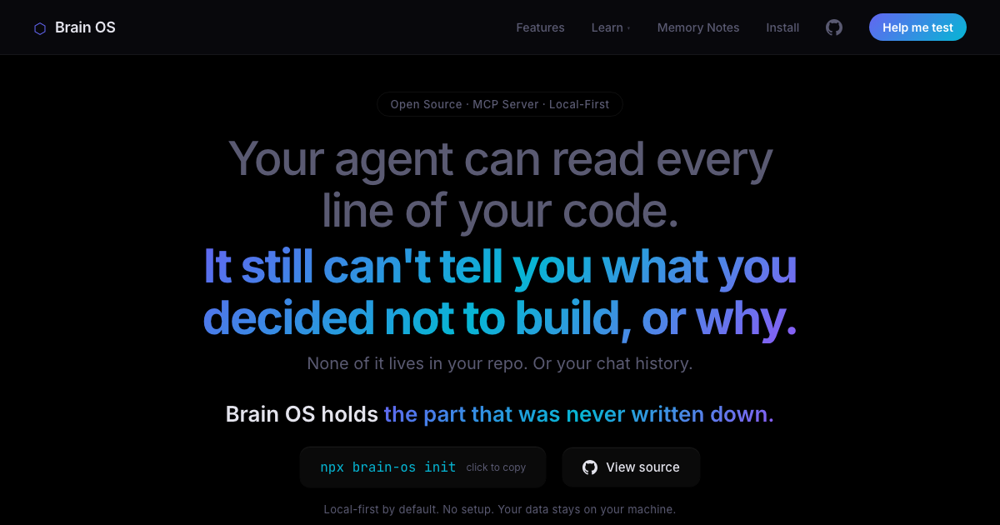

Case 02 · AI infrastructure · Product + brand + build
An AI memory operating system for makers, and the system I use to run every other project here. I shipped the product, the cloud, the brand and the design system.

The live site · brainos-hq.com
AI coding tools have memory of your conversations. They still forget the state of your project.
Chat history remembers what you said. It doesn't hold the things that actually run a project: the decisions you've already made and shouldn't relitigate, what's blocked, what has momentum, what you chose not to do and why. So every new session (and every switch between tools) starts with the same tax: re-explaining where things are.
Brain OS is built around that one honest gap: operational state, not transcripts. A memory layer that holds a project's real status and decisions, and follows you across the tools you already work in.
Brain OS connects over MCP, so the same memory is reachable from Claude Code, Cursor, ChatGPT and Grok. Ask "what changed last session?" or "does this conflict with a past decision?" and it answers from structured state instead of guesswork. It ships in two halves:
A public package developers install into their own setup. The open, self-hosted foundation.
A live connector at app.brainos-hq.com: accounts, dashboard, and one memory that travels across every connected tool.
The open-core split is itself a product decision: the npm core is frozen at a stable version, and new capability promotes to the cloud, keeping the public foundation dependable while the hosted product moves. Onboarding uses a PKCE-only public OAuth client, so a developer never has to handle a shared client secret to connect.
The hardest design problem here isn't visual. It's governance. When AI connectors can write to the same memory humans rely on, you have to decide what an AI is allowed to change. My answer became a core interaction rule:
It's the same instinct as the anti-alarm work in ruwth, pointed at a different risk: the interface has to make the system trustworthy by default, not just capable. A memory you can't trust is worse than no memory at all.
"Operational state, not transcripts." The positioning had to read as infrastructure, not AI-assistant marketing.
I designed the whole identity to its own documented rules, with colour, type, motion and voice as one system:
That restraint is the brand. For a developer audience, the fastest way to lose trust is to sound like every other AI landing page, so the design system's job was to sound like none of them.
Recall is the product: if it surfaces the wrong memory, nothing else matters. So it's a hybrid: semantic embeddings + keyword matching + structural ranking, fused together. And it's measured against a real corpus, not eyeballed.
That discipline paid off concretely: a recall score sitting at 0.11 turned out to be an embedding-shape bug, not a model limit. Fixing it lifted real-corpus recall to 0.94. The lesson I carry from it (into design as much as engineering) is to instrument the thing you care about and let the number, not the vibe, tell you whether it works.
Shipped. The package is published to the public npm registry; Brain OS Cloud is live at app.brainos-hq.com with login, register and dashboard. The codebase carries 169 passing tests and a privacy-gate that fails the build if private state would ever leak, and it passed a security review with no critical or high findings: per-user tenant isolation, hashed tokens at rest, rate-limited OAuth. It's in controlled beta with the first external users onboarded. Honest framing: it's real, shipped and security-reviewed, but it's an early beta, not a mass-adopted product.
Brain OS is the clearest evidence that I can carry a product the whole distance: from a sharp problem statement, through a brand and design system, to a live, tested, secured service that other people can actually sign into.